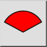

Area arco/cerchio/ellisse
Barra degli strumenti / Icona:


Menù: Info > Area arco/cerchio/ellisse
Scorciatoia: I, C
Comandi: acearea | ic
Questa è una traduzione automatica.
Barra degli strumenti / Icona:


Menù: Info > Area arco/cerchio/ellisse
Scorciatoia: I, C
Comandi: acearea | ic
Autore: Robert S.
Questo comando calcola l'area di archi, cerchi, ellissi e archi ellittici, e opzionalmente aggiunge le informazioni al livello corrente di un disegno. Se si seleziona un altro tipo di entità, nella riga di comando viene visualizzato un avviso.
Per gli archi, ci sono due opzioni per il calcolo delle aree, vale a dire Segmento o Settore. L'area di un segmento (o di una fetta) è l'area delimitata dall'arco e da due linee tracciate dal punto iniziale e finale dell'arco al centro dello stesso. L'area di un settore è l'area delimitata dall'arco e da un accordo tracciato dal punto iniziale a quello finale dell'arco.

Figura 1: un segmento (fetta) e un settore.
Opzioni
Questo comando ha le opzioni standard "Aggiungi misura al disegno" e "Altezza testo".

Figura 2: Opzioni delle informazioni standard
Che sia spento o meno, quando si fa clic su un arco, un cerchio, un'ellisse o un arco ellittico, l'informazione viene visualizzata nel widget a riga di comando.

Figura 3: Informazioni visualizzate nella riga di comando
(Nota: ogni volta che si avvia un comando info, la casella di controllo "Aggiungi misurazione al disegno" è sempre deselezionata. È necessario ricordarsi di accenderlo se si desidera che le informazioni siano aggiunte al disegno).
Aggiunge inoltre le seguenti opzioni.

Figura 4: Opzioni aggiunte
Modo operativo:
La modalità si applica solo agli archi elettrici.

Settore: Questa modalità restituisce l'area del settore. Questa funzione
è utile se utilizzata insieme al comando
"Area poligonale".
 Segmento: Questo modo restituisce l'area del segmento.
Aggiungi:
Entità: Consente di selezionare se si desidera aggiungere una copia dell'entità misurata al livello corrente del disegno.
Accordo: Consente di selezionare se si desidera aggiungere al disegno l'accordo (settore) o le linee di raggio (segmento).
Lunghezza: Per impostazione predefinita, l'area viene sempre stampata sul disegno. Questa opzione consente di selezionare se si desidera aggiungere informazioni aggiuntive al disegno.
Per i cerchi e le ellissi piene l'informazione supplementare è la circonferenza. Utilizza il punto centrale come angolo in basso a sinistra per il testo aggiunto.

Per gli archi circolari, le informazioni aggiuntive sono la lunghezza dell'arco e la lunghezza della corda (nel modo settore) o il raggio (nel modo segmento).
Per le ellissi le informazioni aggiuntive sono la lunghezza dell'arco e la lunghezza dell'accordo (in modalità settore), o la distanza tra il punto centrale e il punto iniziale dell'arco, seguita dalla distanza tra il punto centrale e il punto finale dell'arco (in modalità segmento).
L'angolo in basso a sinistra per il testo aggiunto è il punto finale dell'arco.